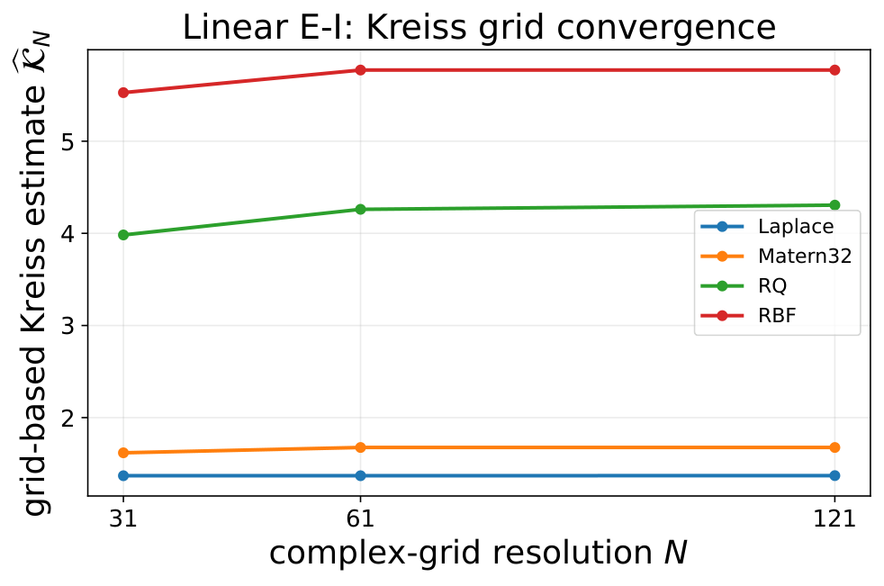

Interactive learning studio · 6 lessons
The Geometry of
Transient Amplification
From stable eigenvalues to kernel-induced representation growth
Himanshu Singh · NeuReps 2026 Proceedings Track
Use → / ← to advance, ↓ to explore a lesson, F for fullscreen, O for slide overview. Swipe on touchscreens.
Course map
Six questions guide the story
01. Why aren't eigenvalues enough?
02. What does a kernel change?
03. How does KEDMD inherit geometry?
04. What does Kreiss measure?
05. How do pseudospectra help?
06. How should we choose kernels?
Theoretical illustrations and actual experimental evidence are explicitly labeled throughout.
Lesson 01 / Spectral stability
Can a stable matrix amplify a perturbation?
Yes. The spectral radius describes asymptotic behavior, but not necessarily the maximum norm at intermediate times.
Keep the eigenvalues fixed. Change the off-diagonal coupling. Observe what happens.
Lesson 01 / Live computation · illustrative matrix
Same eigenvalues, different growth
Non-normal coupling 2.0
Fixed spectral radius: 0.8
Peak over t=0,…,40: —
Peak time: —
Exact singular-value computation for the illustrated 2×2 matrix; not paper data.
Lesson 02 / Reproducing kernel geometry
What changes when we change the kernel?
A kernel determines inner products among sampled representers. Different kernels produce different geometric measurements of the same sampled states.
Representation-space amplification is not automatically physical-state amplification.
Lesson 02 / The four geometries studied
Four kernels, four induced geometries

Original scientific figure from the research repository. Kernel geometry affects the fitted representation and its induced norms.
Lesson 02 / Transport identity
Kernel-section transport
Given sampled states X and images Y=F(X), define the section transport on the sampled span.
Finite sampled-span identity when G_X is positive definite. Singular Gram matrices require additional well-definedness conditions.
Lesson 03 / Geometry-normalized KEDMD
How does the Gram matrix enter the operator?
A similarity transform converts the Gram-induced norm into the Euclidean spectral norm. Across kernels, both the Gram geometry and fitted matrix may change.
Lesson 03 / The paper's central inequality
A geometry-sensitive bound
This upper bound is not an assertion that the observed peak equals \(\chi_{k,\lambda}^{t}\).
The actual transient-growth curve depends on powers of the fitted normalized operator.
Lesson 03 / Research evidence
Measured finite-time amplification

Original Linear E–I transient-amplification figure. Other systems are available in the main website laboratory.
Lesson 04 / Kreiss constant
The resolvent looks beyond eigenvalues
When the spectrum lies in the closed unit disk, the finite-dimensional Kreiss matrix theorem also provides a dimension-dependent upper bound on the power supremum.
For matrices with spectral radius slightly above one, the infinite-horizon power supremum can be unbounded; don't apply the stable-matrix upper bound without checking hypotheses.
Lesson 04 / Numerical estimate vs. exact supremum
How is the Kreiss constant estimated?
Coarse grid
Reported estimate
Refinement
Finite-grid maximization is a lower estimate of the exact supremum over the full exterior domain. The paper's convergence checks are empirical, not a certified global error bound.
Lesson 04 / Original numerical evidence
Kreiss estimate: kernel comparison
61×61 discrete Kreiss estimates, extracted from the original CSVs.
Measured finite-horizon peak growth
These are distinct diagnostics; matching kernel orderings do not imply equal magnitudes.
Lesson 04 / Grid refinement
Does the resolvent estimate converge?

Original grid-convergence figure. The system selector on the previous slide also changes this figure.
Lesson 05 / Pseudospectra
Where is the resolvent large?
For a non-normal matrix, pseudospectral contours can extend far beyond the eigenvalue locations.
The bound follows from the resolvent definition and pseudospectral radius, with the usual convention for ε-pseudospectra.
Lesson 05 / Original pseudospectral contours
What the contours reveal

Original paper figure; select another system in Lesson 04 to update this plot.
Lesson 06 / Kernel choice
Is the kernel with the largest peak always best?
No universal answer follows from transient growth alone. Kernel choice also changes conditioning, regularization sensitivity, and the target of the analysis.
Here, \(\mathcal G_k\) denotes the measured peak representation-space amplification. A Pareto view makes competing diagnostics explicit without asserting a universal kernel ranking.
Lesson 06 / Pareto evidence
Dominance and trade-offs

Original Pareto/dominance figure from the paper's repository. Select a system in Lesson 04 to update this plot.
Course conclusion
What should you take away?
1. Stable eigenvalues need not exclude transient growth.
2. Kernels define the geometry in which amplification is measured.
3. Resolvent and pseudospectral diagnostics illuminate non-normality.
4. Empirical kernel rankings are system- and criterion-dependent.
Explore theorems ↗ · Kreiss laboratory ↗ · Pareto analysis ↗
Further reading
Continue with the original research
Source code and original data ↗
Return to interactive research website ↗
Scientific plots and numerical data are taken from the research repository. The 2×2 demonstration is an independently computed teaching example.